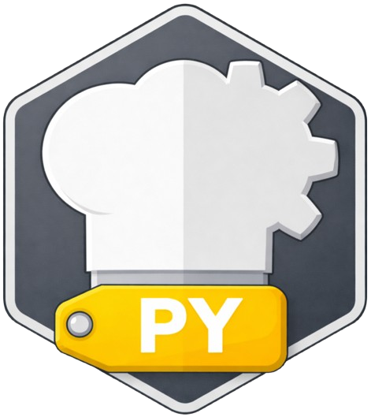

PROJECT

ZZX-LABS R&D // SOFTWARE // WEB MIRROR
CyberChefPy
Python module and CLI CyberChef-style transformation companion for scripting, automation, notebooks, reproducible recipe files, CLI command generation, test vectors, and local data/file analysis.
PYTHON // CLI // NOTEBOOKS
CyberChefPy Browser Workbench
RECIPE MODELCLI EXPORTPYTHON CODEGENOFFLINE
AUTOMATION
Same recipe, scriptable interface
The browser validates the recipe contract and emits CLI/module/notebook forms suitable for the native Python implementation.